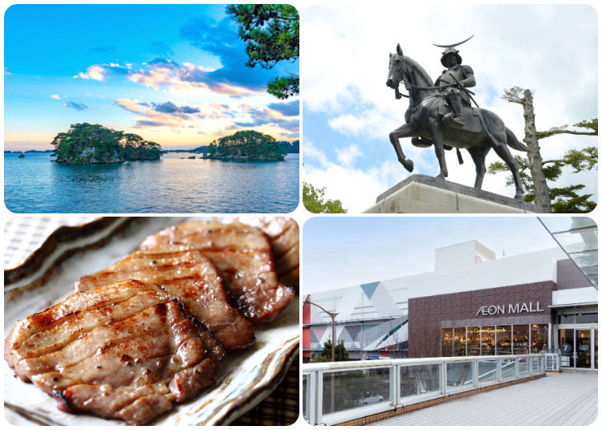

仙台市
仙臺市（日語：仙台市〔仙臺市〕／せんだいし Sendai shi */?）是日本宮城縣縣治，位於宮城縣中部，為東北地方最大都市，同時也是東北地方唯一的政令指定都市。市名一般認為得名於古城「千代城」，於1600年由安土桃山時代名將伊達政宗擴建並改名為同音的「仙臺」，此詞係出自唐代韓翃的七言律詩《同題仙遊觀》。由於全市綠化比例高，而有「杜之都」（森林之都）之譽。
歷史
創建仙臺城的武將
仙臺藩主伊達政宗最早在此建城，奠定了現在仙臺市的市街基礎。伊達政宗自1600年開始築城，之後不斷推行新計畫，進行城建設計和開發等。當時的仙臺非常繁榮，西班牙的使節形容當時的情形為—東西南北人來人往，勝似江戶（現在的東京）。
仙臺的街道既重功能性又具有現代化城市的特點，其發展完全歸功於伊達政宗的遠見，他為未來的仙臺市的發展打好基礎。仙臺的街道佈局和現在發展情形連同廣瀨川一起，從伊達政宗所建造的仙臺古城遺跡上往下俯瞰，一覽無遺。